I love cats. I would be lying if I said I don’t. Unfortunately there are more and more stray cats on the streets. Some feed them to keep them alive, but mostly people just don’t care for the lives of the little ones. Luckily there are animal foundations, which help the alley cats and look after them. The lucky ones might get adopted one day. Well, my favourite feline foundation is Koci Pazur based in Poznań. They are doing really great job. Unluckily their website is a bit out-of-date so I decided to prepare redesign concept of their website.
OVERVIEW
TEAM
Agnieszka Körber Solo project
TIME
February/ March 2019
MY ROLE
User research (survey, interviews)
Competitive analysis
Personas
Website structure
Paper wireframing
Prototyping
Design
UX CHALLENGE
Identifying user and foundation needs
Redesigning the website according to the findings
UNDERSTANDING
THE USERS
The first step was to understand the needs and the motives of people willing to adopt a pet from an animal foundation. To do so I’ve conducted user interviews connected with usability testing of the current website. I’ve also prepared a survey addressed to people who either made the adoption or were planning to do so. To gather more data I’ve analyzed user profiles of the most active commentators on posts published by Koci Pazur Foundation on Facebook. According to the data acquired, I’ve prepared personas. Read the details below.
INTERVIEWS
Key takeaways from these interviews were that people don’t really trust animal foundations. All of the interview participants would look for financial reports to make sure the foundation takes care of animals and spends money from donations on them. The second problem are types of support - people don’t know most of them. They usually hear about donations and other types of financial help. Respondents asked about animals were consistent - before adoption, they would pay attention mainly to cat’s photos, behaviour, and state of health.
I would pay attention to the foundation's reports, whether money isn’t disappearing there.
Original in Polish: “Zwróciłbym uwagę na sprawozdania fundacji, czy nie znikają tam pieniądze.“
It is important how a cat looks like. How it behaves. What its state of health is. How it tolerates other people and other animals.
Original in Polish: “Ważne jest to jak kot wygląda, jak się zachowuje, jaki jest jego stan zdrowia, jak toleruje innych ludzi i inne zwierzęta.”
SURVEYS
The respondents
I conducted a short survey to get to know user opinion about animal foundations and their pupils in general. I received 24 responses. Respondents were mostly women, aged 18-45, actively using the Internet. Over half of them spends more time using the Internet on mobile devices than on a computer.
Which animal to choose?
When choosing the right animal for adoption, people are guided primarily by a young age, lack of serious diseases and the availability of many photos and videos on the website. Castration, basic vaccinations and good tolerance of other animals are also important.
Known kinds of help
The respondents heard about most of the kinds of support. The least known methods turned out to be "buy dinner for" actions, virtual adoptions, providing material goods (food, medicine), charity auctions, and purchasing selected products at shops, which then donate part of their profits made to the foundation.
Expected information on the website
Besides adoption information, respondents would expect to find information about animal rights, notifications about lost animals in the area and guides on how to properly care for animals.
PERSONAS
Following personas were formed according to the data collected during the interviews, the survey and the analysis of the most active user profiles on Koci Pazur Foundation Facebook Page.
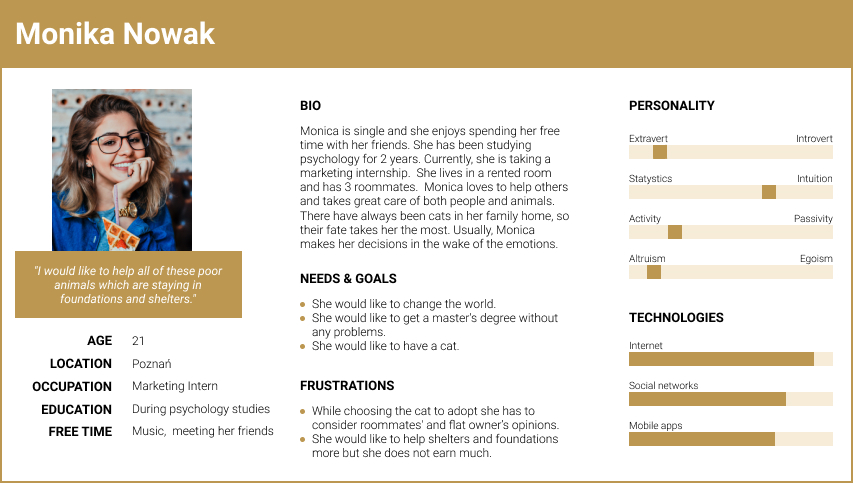
First persona
Second persona
UNDERSTANDING THE FOUNDATION
To understand Koci Pazur Foundation I’ve analyzed their website, Facebook page, and their Forum. According to the gathered data I’ve answered the following questions.
What does Koci Pazur do?
The foundation was established in 2006 and since then their volunteers take care of injured and abandoned animals. These cats are mostly placed in temporary foster homes, where they are awaiting adoption. The Koci Pazur Foundation also supports people who would like to aid animals in need.
How does Koci Pazur Foundation communicate with their community?
Mostly through their Facebook page, publishing on average 6 posts a day (regardless of the day of the week) and actively responding to comments below the posts. On their forum users can find regularly updated information about cats under Foundation’s care, ask questions and get involved in conversations with others. On their website you can find mostly notices about missing animals and updates on adoptions.
Where does the Foundation get its money from?
The Foundation can fulfill statutory goals mainly thanks to donations, subsidies, and fundraisers. The Foundation also runs lots of campaigns such as selling items at charity auctions, cooperation with other companies (which are transferring part of their income to the Foundation), or virtual adoptions. Financial backing isn’t the only way to get things going to save some feline lives. People can help the cats under the Foundation’s care by providing food, blankets, cleaning supplies, voluntary service, or simply by promotion of the Foundation.
What is the content of Koci Pazur Foundation’s website?
In its current form, the website serves mainly as informative function. On the homepage, the user can find information about lost cats in Poznań and surroundings. By checking the menu one can also find out the Foundation’s statutory goals, different types of support, adoption terms, and get to know pets awaiting adoption. On the website, one can also read articles about cats care or check adoption archive up to 2007.
At the moment the main content of the website has width 980px. The rest are margins. To keep the screenshots clear I removed the margins. You can see exemplary screens of the website below.
Homepage
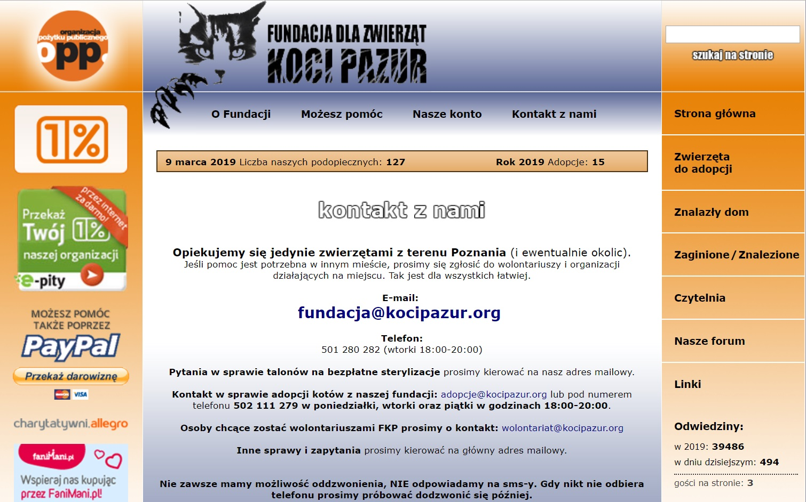
Contact page
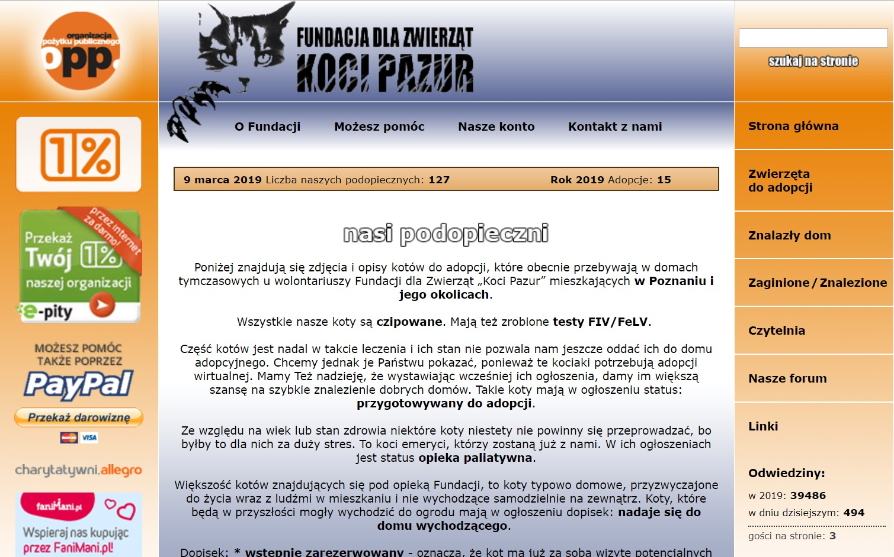
Pet for adoption page
COMPETITIVE ANALYSIS
I’ve analyzed few other animal foundations’ websites, especially the ones focused on helping stray cats. All of them were using their homepages to provide as much information about foundation’s activity as possible. The vast majority at this stage presented pets for adoption, as well as suggested aid methods.
Animalia Animal Foundation homepage
Agapeanimali Animal Foundation homepage
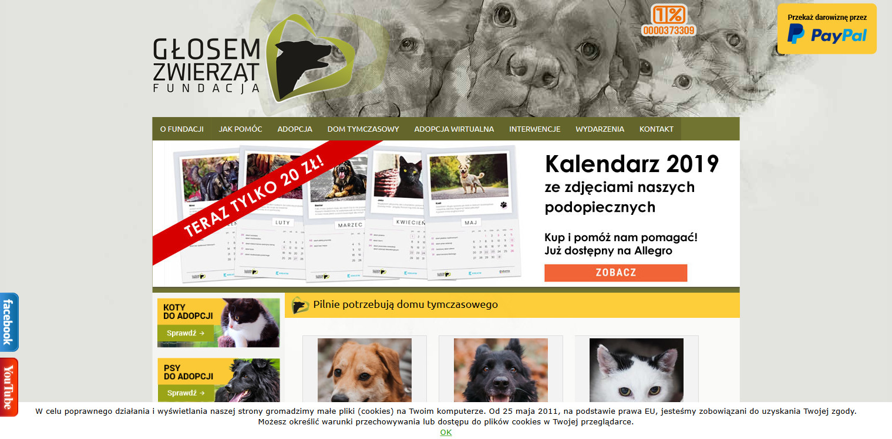
Głosem Zwierząt Animal Foundation homepage
Kot Animal Foundation homepage
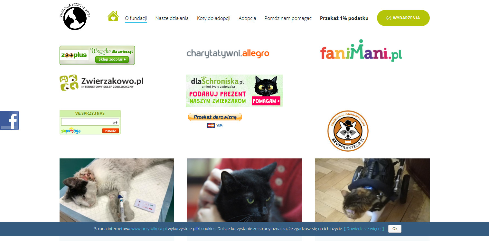
Przytul Kota Animal Foundation homepage
Kłębek Animal Foundation homepage
WEBSITE STRUCTURE
Structure of the current website is a bit messy. There are 2 menus and no navigation aid, so one can get lost easily. It would be beneficial to set the navigation in order, so it all would be clear and the information would be easy to find.
CARD SORTING
To get to know user opinions I've asked 2 people to put the current menu positions written on post-its notes in order and name created groups on pink post-its. You can see the results below.
Card sorting from first user
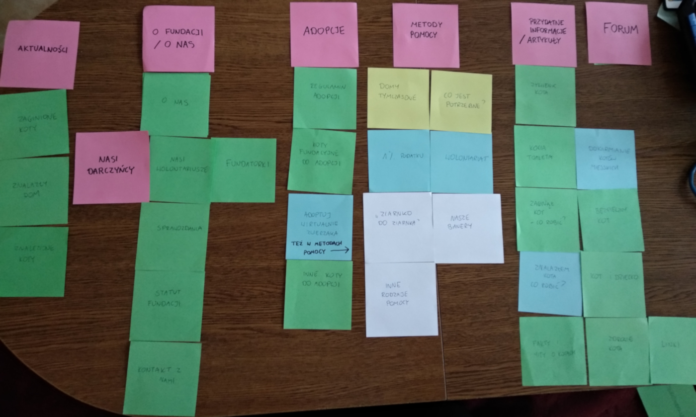
Card sorting from second user
SITE MAP
Proposed website structure
SKETCH
After some time spent on gathering data, the time is nigh to sketch the ideas. I've noted key findings down, grabbed a paper and a marker. Then I started sketching, while thinking about my personas.
let’s sum it up
The website should:
be fully responsive;
be more transparent and neat;
provide quick access to information about the foundation (especially statutory goals and financial reports) to inspire trust in people;
provide detailed description of the cats;
emphasize the ways of helping the pets under foundation’s care;
take social media into consideration.
wireframing
Knowing the people don't really trust foundations I've focused on 'reasons to believe'. On KV on the homepage, there is information about the number of years committed to help the little ones. When scrolling the page users can see the number of adoptions so far, the number of cats under foundation's care, the number of cats awaiting adoption etc. It's also easy to check the foundation's statutory goals and financial reports to make sure the foundation is honest.
I wanted to emphasize the possibility of using various support methods. Users can try out the hints and choose the best type of help for them without wondering what they can do. On each page there is a link to all types of help. Moreover, on the page with a cat for adoption user can see what kind of support the cat needs. There is also possibility to give the cat a gift, which is: putting a dinner, sending a gift box with food or donating some money for the cat.
Each decision I made was carefully thought. Due to respect to your time and limited space, I explained only few of them. Feel free to ask me for more. Check out the wireframes below.
Homepage
Adoptions page
Pets for adoption page (view a)
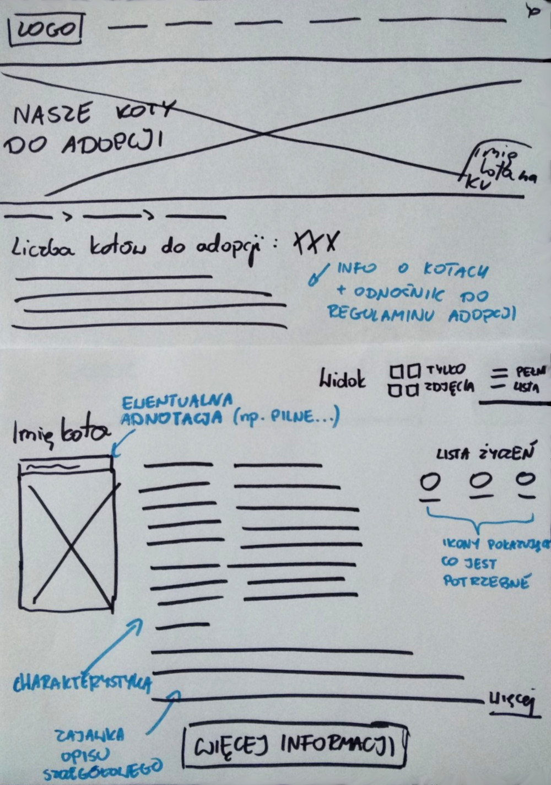
Pets for adoption page (view b)
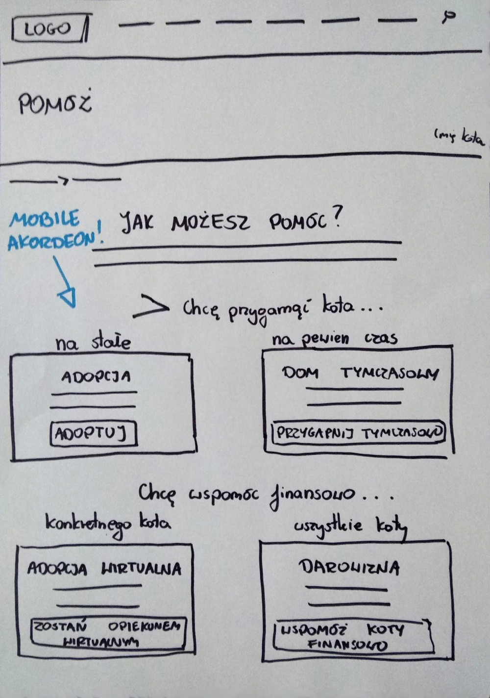
Types of help page
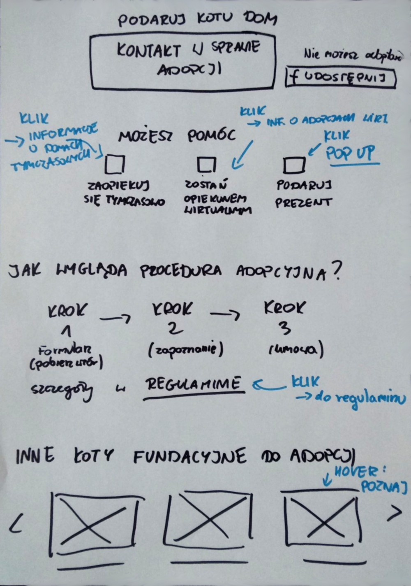
Cat page (the middle)
Articles page
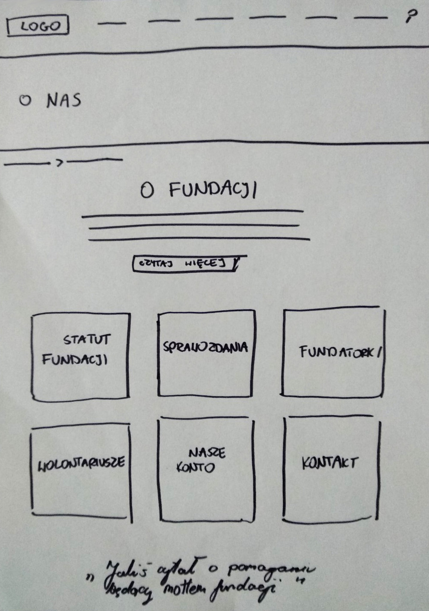
About us page
DESIGN
DESKTOP
Homepage
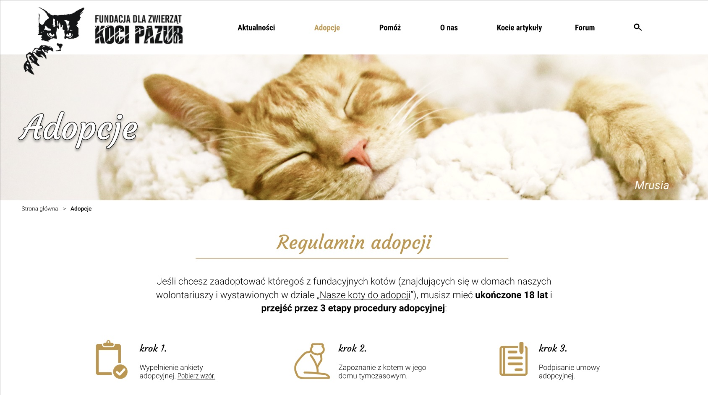
Adoptions page
About us page + menu
Types of help page
Cat page
Articles page
MOBILE
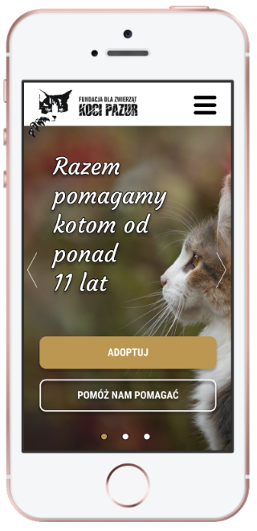
Homepage
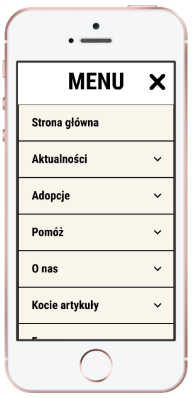
Menu
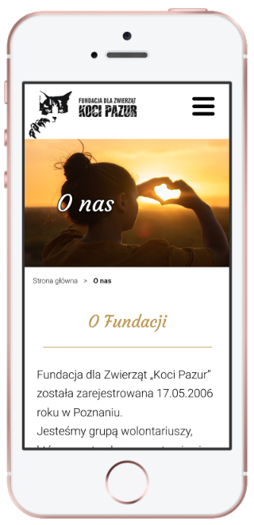
About us page
Types of help page
Cat page
Meet our pupils section
PROTOTYPE
NEXT STEPS
By now the prototype I've prepared lacks usability testing with real users. It would be great to refine the website according to the results of such examination. It would be even better if the website redesign concept I've proposed got to go online one day.
TAKEAWAYS
Mastering Figma During prototyping, I’ve discovered and mastered some new Figma’s features. Overlays, for example, which were added to the tool at the end of 2018.
Choosing colors of post-it notes After using card sorting I realized the colors of the post-its notes could have influenced users’ decisions. Never again mixed colors of post-its in card sorting!
Want to know more about this project? Contact me for details